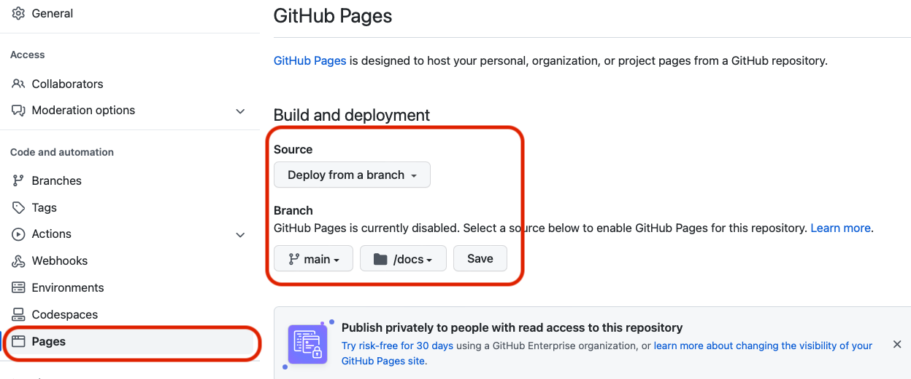
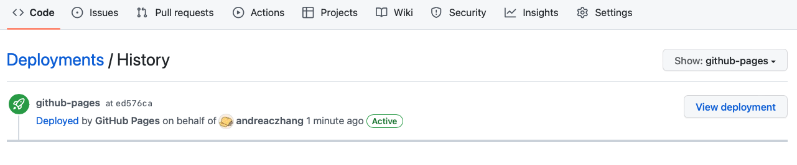

Tutorial: a step-by-step walkthrough
This tutorial outlines a minimal workflow so that you can build your own quarto website. For a more complete guide, please refer to the official quarto documentation.
- GitHub account to set up a public repository
- Rstudio (version xxx)
- Quarto (version xxx)
1. Set up a version controlled quarto project
This can be broken down into a few steps:
1.1 Create a new public repository
It has to be public.
1.2 Link your R project to the repository
Open
You can try to modify the README.md locally, then commit and push to remote (online repository). Refresh the webpage, if you see the remote repository is synced, that means the version control works fine.
2. Build the project
2.1 Structure of a new quarto project
### 2.2 Authoring
Try to write something in the index.qmd file, press Render button, and see what happens.
2.3 Configure the quarto project
In _quarto.yml, change the project configuration to use docs as the output-dir:
project:
type: website
output-dir: docsThen add .nojekyll to the root of the repository. Can do this by (in terminal)
touch .nojekyllPush everything to your repository.
3. Configure GitHub pages, test deployment
When you are more experienced, you can add more content until you’re happy before configuring the GH pages and test the website deployment. I personally prefer to test the deployment early on to make sure it works!
Go to Settings > Pages, publish from docs of the main branch.

Can check GitHub Action and deployment status.


After the deployment is successful, go to view deployment, and a successful website should be published.
4. Add content
Now this is a big topic. There are so many things you can change; but let’s focus on some basics first.
Add a new page
Theme
Code chunks
Images
More on quarto websites
Use list
(Optional) Add interactivity
This is a topic of using quarto extension.
Summary and resources
Workflow
Other quarto projects
Presentation
Books